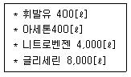
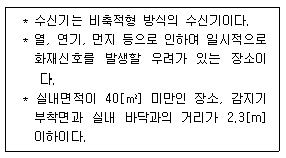
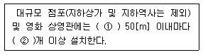
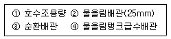

소방시설관리사 (2011-08-21 기출문제)
1과목: 방안전관리론
1. 에너지 방출속도에 대한 설명으로 옳지않은 것은?
- 기화면적에 비례한다.
- 연소속도에 비례한다.
- 유효연소열에 비례한다.
- 기화열에 비례한다.
(정답률: 47%)

2. 다음 중 위험도가 가장 큰 것은?
- CO
- H2S
- NH3
- CS2
(정답률: 55%)
3. 화재 가혹도에 대한 설명으로 틀린 것은?
- 화재하중이 작으면 화재가혹도가 작다.
- 화재실 내 단위시간당 축적되는 열이 크면 화재 가혹도가 크다.
- 화재규모를 판단하는 척도로 주수시간을 결정하는 인자이다.
- 화재발생으로 건물 내부 수용재산 및 건물자체손상을 입히는 정도이다.
(정답률: 60%)
4. 다중이용업소의 실내장식물 중 방염대상물품이 아닌 것은?
- 너비10[cm] 이하의 반자돌림대
- 흡음용 커튼
- 합판과 목재
- 두께2[mm] 미만인 벽지류
(정답률: 52%)
5. 화재발생시 건물 내 재실자들의 피난 소요시간을 확보하거나 줄일 수 있는 방법 중 옳지않은것은?
- 난연성이나 불연성 건축내장재를 사용한다.
- 재실자들에게 화재를 가상한 피난교육을 실시한다.
- 총 피난시간을 증가시키는 구조로 건물을 설계한다.
- 피난 이동시간을 줄이기 위해 피난통로에 장애물 등을 제거한다.
(정답률: 73%)
6. 가로1[m]⨉세로 1[m]의 개구부가 존재하는 구획실에 환기지배형 화재가 발생하여 플래시오버 이전에 개구부 높이가 2배 증가했다면 이 구획실의 환기인자는 약 몇 배 증가했는가?
- 1.4
- 2.8
- 4.2
- 5.6
(정답률: 34%)
7. 위험물화재의 연소확대시 위험성 중 이연성(易燃性)에 관한 설명 중 옳은 것은?
- 연소열이 작다.
- 연소속도가 빠르다.
- 낮은 산소농도에서도 연소되기 쉽다.
- 연소점이 낮고, 연소가 계속되기 쉽다.
(정답률: 29%)
8. 화염이 다른 층으로 확대되지 못하도록 구획하는 건축물의 방재계획으로 옳은 것은?
- 단면계획
- 재료계획
- 평면계획
- 입면계획
(정답률: 49%)
9. 건축방재계획 중 공간적 대응에서 회피성으로 옳은 것은?
- 내화성능, 방연성능, 초기소화대응능력 등의 화재에 대응하여 저항하는 성능
- 화재가 발생한 경우 안전피난 시스템 동작
- 제연설비, 방화문, 방화셔터, 자동화재탐지설비, 스프링클러설비 등에 대한 대응이다.
- 불연화, 난연화, 내장재의 제한, 용도별 구획등으로 출화, 화재확대 등을 감소시키고자 하는 예방적 조치이다.
(정답률: 55%)
10. 할로겐청정소화약제의 ODP를 현저히 낮추기 위해 배제하는 원소는?
- F
- Cl
- Br
- I
(정답률: 42%)
11. 복도에서 피난개시로부터 종료까지의 복도피난허용시간을 계산하는 식은? (단, A=층의거실연면적의 합+층의 복도면적의 합이다.)
- 2√A
- 3√A
- 4√A
- 5√A
(정답률: 44%)
12. 다음 섬유 중 발화온도가 가장 높은 것은?
- 나일론
- 순 면
- 양 모
- 폴리에스테르
(정답률: 52%)
13. 공기나 질소와 같이 불연성 가스를 용기 내부에 압입시켜 내부압력을 유지함으로서 외부의 폭발성 가스가 용기 내부에 침입하지 못하게 하는 구조는?
- 본질안전방폭구조
- 압력방폭구조
- 내압방폭구조
- 유입방폭구조
(정답률: 42%)
14. 고체표면의 화염확산으로 옳지 않은 것은?
- 화염확산방향이 수평전파할 때 확산속도가 빠르다.
- 화염확산에서 중력과 바람영향은 중요변수가 된다.
- 화염확산속도는 화재 위험성 평가에서 중요한 역할을 한다.
- 바람과 같은 방향으로의 화염확산은 순풍에서의 화염확산이라 한다.
(정답률: 69%)
15. 소화기의 형식승인 및 제품검사의 기술기준에서 정한 대형소화기 기준으로 틀린 것은?
- 강화액 60[ℓ]
- 이산화탄소 50[kg]
- 할로겐화합물 30[kg]
- 분말 30[kg]
(정답률: 59%)
16. 구획실화재의 현상에 대한 설명 중 옳지 않은 것은?
- 중성대가 개구부에 형성될 때 중성대 아래쪽은 공기가 유입되고 위쪽은 연기가 유출된다.
- 연기와 공기흐름은 주로 온도상승에 의한 부력때문이다.
- 백드래프트는 연료지배형 화재에서 발생한다.
- 벽면코너화염이 단일 벽면화염보다 화염전파 속도가 빠르다.
(정답률: 60%)
17. 다음 설명 중 틀린 것은?
- 불연성 가스 등을 가연성 혼합기에 첨가하면 MOC(최소산소농도)는 증가한다.
- MOC는 공기와 연료의 혼합기 중 산소의 부피를 나타내며 [%]의 단위로 나타낸다.
- L.O.I(한계산소지수)는 가연물을 수직으로 하여 가장 윗부분에 착화하며 연소를 계속 유지시킬 수 있는 산소의 최저 체적농도[vol%]를 말한다.
- 가연성 가스의 조성이 완전연소조성 부근일경우 최소발화에너지(MIE)는 최대가 된다.
(정답률: 52%)
18. 화재발생시 다량의 물로 주수소화하면 안되는 것은?
- 과산화벤조일
- 메틸에틸케톤퍼옥사이드
- 과산화나트륨
- 질산나트륨
(정답률: 52%)
19. 자동화재탐지설비의 연기감지기가 아닌 것은?
- 이온화식
- 광전식
- 차동식
- 연기복합식
(정답률: 64%)
20. 건물에 익숙한 사람이 피난의 어려움을 겪기 시작하는 연기농도는?
- 감광계수 0.1, 가시거리20~30[m]
- 감광계수 0.3, 가시거리5[m]
- 감광계수 1, 가시거리2[m]
- 감광계수 10, 가시거리 0.2~0.5[m]
(정답률: 54%)
21. 인간의 심장에 영향을 주지 않는 최대농도의 의미를 가지고 있는 것은?
- LC50
- LD50
- LOAEL
- NOAEL
(정답률: 66%)
22. 소방대상물의 크기가 가로 8[m]⨉세로 10[m] ⨉높이5[m]인 9,000[kcal/kg]의 발열량을 갖는 특정가연물이 가득 차 있다면 이 건물 내의 화재하중은 몇[kg/m2]인가? (단,특정가연물의 비중은 0.8로 한다.)
- 8,000
- 9,000
- 10,000
- 12,000
(정답률: 53%)
23. 화재시 평소에 사용하던 출입구나 통로 등 습관적으로 친숙한 경로로 도피하려는 본능을 무엇이라 하는가?
- 귀소본능
- 지광본능
- 추종본능
- 퇴피본능
(정답률: 71%)
24. 다음 설명 중 작열연소에 적합한 설명으로 맞는 것은?
- 연소속도가 매우 빠르고 불꽃과 열을 내며 연소하는 것을 말한다.
- 고에너지화재이며 열가소성 합성수지류의 화재이다.
- 시간당 방출열량이 많다.
- 연료의 표면에서 불꽃을 발생하지 않고 연소하는 것을 말한다.
(정답률: 48%)
25. 다음 중 소염거리에 대한 설명 중 틀린 것은?
- 점화가 일어나지 않는 전극 간의 최대거리를 소염거리(Quenching distance)라고 한다.
- 전극의 간격이 좁은 경우 아무리 큰 전기에너지를 통해 형성된 불꽃을 가해도 점화되지 않는다.
- 최소발화에너지는 소염거리와 연소속도에 비례한다.
- 최소발화에너지는 화염온도에 비례한다.
(정답률: 24%)
2과목: 소방수리학·약제화학 및 소방전
26. 베르누이 방정식 적용으로 틀린 것은?
- 실제유체
- 비점성 유체
- 압축성 유체
- 정상류
(정답률: 44%)
27. 지름 150[mm]인 원관에 비중이 0.85, 동점성계수가 1.33×10-4[m2/s]인 기름이 0.5[m2/s]의 유속으로 흐르고 있다. 이때 관마찰계수는 약 얼마인가?
- 0.11
- 0.15
- 0.17
- 0.19
(정답률: 37%)
28. 포소화설비의 고저포약제량 산출방식으로 옳은 것은? (단, Q1:포수용액의 양[ℓ/min∙m2], A:탱크의 액표면적[m2], T:방출시간[min], S:농도%])
- Q = A × Q1 × T
- Q = A × Q1 × T × S
- Q = N × S × 6,000[ℓ]
- Q = N × S × 8,000[ℓ]
(정답률: 59%)
29. 소방호스 2.5인치에 노즐 1.25인치가 연결되어 있고, 유량은 0.0117[m3/s]일 때 Nozzle에 걸리는 반발력을 계산하시오. (단, 물의 밀도는 997[kg/m3]임)
- 172.5[N]
- 152.7[N]
- 129.5[N]
- 43.0[N]
(정답률: 4%)
30. 직경25[cm]의 매끈한 원관을 통해서 물을 초당 100[ℓ]를 수송하고 있다. 관의 길이 5[m]에 대한 손실수두는? (관마찰계수 f는 0.03)
- 0.013[m]
- 0.13[m]
- 1.3[m]
- 13[m]
(정답률: 41%)
31. 청정소화약제소화설비의 설계농도가 가장 큰 소화약제는?
- FK - 5 - 1 - 12
- HFC - 125
- HFC - 23
- FC - 3 - 1 - 10
(정답률: 21%)
32. 회전수가 2배가 되면 유량은 몇 배가 되는가?
- 2배
- 4배
- 8배
- 16배
(정답률: 53%)
33. 물의 소화성능을 향상시키기 위한 첨가제로 적당하지 않는 것은?
- 침투제
- 증점제
- 내유제
- 유화제
(정답률: 53%)
34. 3[%]의 포원액 6[ℓ]를 방출하였더니 방출한 포 의 체적이 20,000[ℓ]가 되었다. 이때 포약제의 팽창비는 얼마인가?
- 10배
- 100배
- 1,000배
- 2,000배
(정답률: 53%)
35. 성능이 같은 두 대의 소화펌프를 병렬로 연결하였을 때의 양정(H)은?
- 0.5H[m]
- 1H[m]
- 1.5H[m]
- 2H[m]
(정답률: 49%)
36. 다음 중 유량측정기가 아닌 것은?
- 벤투리미터(Venturi meter)
- 로타미터(Rota meter)
- 마노미터(Mano meter)
- 오리피스(Orifice)
(정답률: 46%)
37. 소화펌프의 토출량이 520[ℓ/min], 전양정50[m]펌프 효율이 0.6인 경우 전동기 용량은 얼마가 적당한가? (전달계수는 1.1이다)
- 5[kW]
- 7.8[kW]
- 10[kW]
- 15[kW]
(정답률: 62%)
38. 60[Hz]에서 콘덴서가 10[Ω]의 용량 리액턴스를 가질 때 정전용량[㎌]은 얼마인가?
- 125
- 165
- 225
- 265
(정답률: 46%)
39. 대칭 3상 Y결선부하에 각 상의 임피던스 Z=3+j4[Ω]이고 부하전류가 15[A]일 때 부하의 선전압의 크기는 얼마인가?
- 129.9
- 139.9
- 149.9
- 119.9
(정답률: 43%)
40. 어떤 전열기에 저항이 5[Ω]이고 흐르는 전류가 20[A]일 때 전열기에서 소비되는 전력은 몇[W]인가?
- 1,000
- 100
- 2,000
- 200
(정답률: 57%)
41. 어떤 콘덴서를 50[Hz], 100[V]의 교류에 접속하면 10[A]의 전류가 흐른다고 한다. 이 콘덴서를 60[Hz], 100[V]에 연결하면 몇 [A]의 전류가 흐르는가?
- 7
- 10
- 12
- 14
(정답률: 42%)
42. 온도를 전압으로 변환시키는 요소는?
- 광전지
- 열전대
- 자동변압기
- 측온저항계
(정답률: 60%)
43. 30[mH]인 코일이 있다. 이 코일에 100[V], 60[Hz]의 교류 전압을 인가하였을 때 흐르는 전류[A]는 얼마인가?
- 5.85
- 6.85
- 7.85
- 8.85
(정답률: 36%)
44. 교류파형의 상용주파수 60[Hz]의 각속도[rad/s]는 얼마인가?
- 177
- 277
- 377
- 477
(정답률: 54%)
45. v=Vmsinωt의 정현파 전류가 ωt=30°일 때 순시치가 50[V]라면 이 전압의 실효값은 몇 [V]인가?
- 70.7
- 65.7
- 60.7
- 63.7
(정답률: 48%)
46. 다음 위험물의 소화방법으로 주수소화가 적당하지 않은 것은?
- NaClO3
- P4S3
- Ca3P2
- S
(정답률: 39%)
47. 다음 중 할로겐화합물 소화약제인 Halon1301과 Halon2402에 공통으로 없는 원소는?
- Br
- Cl
- F
- C
(정답률: 50%)
48. 제3종 분말소화약제가 열분해될 때 발생하는 물질이 아닌 것은?
- H3PO4
- H4P2O7
- HPO3
- P2O5
(정답률: 44%)
49. 드라이 케미컬(Dry Chemical)로 100[kg]의 탄산가스를 얻고자 할 때 표준상태에서 몇 [kg]의 중탄산나트륨을 사용하면 되겠는가?
- 382[kg]
- 372[kg]
- 312[kg]
- 282[kg]
(정답률: 31%)
50. 다음 중 소화효과에 대한 설명으로 틀린 것은?
- 산소의 농도를 낮추어 산소공급의 차단에 의한 소화는 제거효과이다.
- 주수에 희한 효과는 냉각효과이다.
- 화재시 화재현장에 가연물을 없애주는 것은 제거효과이다.
- 소화분말에 의한 효과는 가열분해에 의한 질식,억제, 냉각효과가 있다.
(정답률: 56%)
3과목: 소방관련법령
51. 소방시설 설치유지 및 안전관리에 관한 법령상 형식승인을 받는 소방용품에 포함되지 않는것은?
- 옥내소화전함
- 송수구
- 예비전원이 내장된 비상조명등
- 소방호스
(정답률: 29%)
52. 소방시설관리업의 등록기준 중 장비기준에 축전지설비 점검기구가 아닌 것은?
- 조도계
- 절연저항계
- 전류전압측정계
- 스포이드
(정답률: 40%)
53. 소방대의 구성원이 될 수 없는 것은?
- 소방공무원
- 의무송방원
- 의용소방대원
- 자체소방대원
(정답률: 43%)
54. 위험물 지정수량의 24만배 이상 48만배 미만을 취급하는 제조소에는 화학소방자동차 몇대 및 조작인원을 몇 명을 두어야 하는가?
- 2대 - 10명
- 2대 - 15명
- 3대 - 15명
- 3대 - 20명
(정답률: 56%)
55. 다음 소방신호의 종류로 잘못된 것은?
- 해제신호
- 발화신호
- 진압신호
- 훈련신호
(정답률: 57%)
56. 다음 중 방염대상물품이 아닌 것은?
- 창문에 설치하는 블라인드
- 카펫, 두께가 2[mm] 미만인 종이벽지
- 전시용 합판 또는 섬유판
- 암막, 무대막(영화상영관에 설치하는 스크린을 포함한다.)
(정답률: 55%)
57. 다음 소방시설관리사에 대한 행정처분기준으로 맞는 것은?
- 거짓, 그 밖의 부정한 방법으로 시험에 합격한 경우 1차 행정처분은 자격정지 2년이다.
- 동시에 둘 이상의 업체에 취업한 경우 1차 행정처분은 자격정지 6개월이다.
- 소방시설관리사증을 다른 자에게 빌려준 때는 1차 행정처분은 자격취소이다.
- 점검을 하지 않거나 거짓으로 한 경우 2차 행정처분은 자격취소이다.
(정답률: 53%)
58. 화재조사에 대한 설명 중 알맞은 것은?
- 화재조사를 하는 관계공무원은 그 권한을 표시하는 증표를 지니고 이를 관계인에게 내보여야 한다.
- 화재조사를 하는 관계공무원은 관계인의 정당한 업무를 방해하거나 화재조사를 수행하면서 알게 된 비밀을 다른 사람에게 누설하여도 된다.
- 소방공무원과 일반공무원은 화재조사를 할 때에 서로 협력하여야 한다.
- 소방본부장이나 소방서장은 화재조사 결과 방화 또는 실화의 혐의가 있다고 인정하면 지체 없이 소방방재청장에게 그 사실을 알리고 필요한 증거를 수집, 보존하여 그 범죄수사에 협력하여야 한다.
(정답률: 42%)
59. 다음 중 틀린 것은?
- 특정소방대상물의 종합정밀점검은 소방안전 관리자로 선임된 소방설비기사가 할 수 있다.
- 특정소방대상물의 작동기능점검은 소방안전 관리자가 1년에 1회 이상 실시하여야 한다.
- 종합정밀점검 대상인 특정소방대상물의 작동기능점검은 종합정밀점검을 받은 달부터 6월이 되는 달에 실시하여야 한다.
- 소방방재청장이 소방안전관리가 우수하다고 인정한 특정소방대상물의 경우에는 해당 연도부터 3년간 종합정밀점검을 면제할 수 있되, 면제기간 중 화재가 발생한 경우를 제외한다.
(정답률: 51%)
60. 소방시설업에 대한 설명 중 틀린 것은?
- 전문소방시설설계업의 주된 기술 인력은 기술사이고, 보조 기술인력은 1명 이상이다.
- 전문 소방공사감리업인 경우 법인의 자본금은 1억원 이상이다.
- 소방시설관리사의 소방설비기사(기계분야 및 전기 분야의 자격을 함께 취득한 사람)자격 함께 취득한 사람은 소방시설관리업과 전문소방시설 공사업의 주된 기술 인력으로 선임할 수 있다.
- 제연설비와 연소방지설비는 기계분야의 소방감리 대상이다.
(정답률: 29%)
61. 다음 중 시, 도지사의 소방업무 지원으로 틀린 것은?
- 관할 지역의 특성을 고려하여 종합계획의 시행에 필요한 세부계획을 매년 수립하고 이에 따른 소방업무를 성실히 수행하여야 한다.
- 소방력의 기준에 따라 관할구역의 소방력을 확충하기 위하여 필요한 계획을 수립하여 시행하여야 다.
- 다중이용업소의 안전관리기본계획은 5년마다 수립, 시행하여야 한다.
- 소방 활동에 필요한 소화전, 급수탑, 저수조를 설치하고 유지, 관리 하여야 한다.
(정답률: 50%)
62. 소방방재청장, 소방본부장 또는 소방서장이 다중 이용업소에 대한 화재위험평가를 실시하는 대상이 아닌 것은?
- 2,000[m2]지역 안에 다중이용업소가 50개 이상 밀집하여 있는 경우
- 5층 이상인 건축물로서 다중이용업소가 10개 이상 있는 경우
- 하나의 건축물에 다중이용업소로 사용하는 영업장 바닥면적의 합계가 1,000[m2] 이상 인 경우
- 1,000[m2]지역 안에 다중이용업소가 10개 이상 밀집하여 있는 경우
(정답률: 47%)
63. 다음 소방시설의 분류로 맞게 연결된 것은?
- 소화설비 - 연소방지설비
- 경보설비 - 비상조명등
- 피난설비 - 방열복
- 소화활동설비 - 통합감시시설
(정답률: 42%)
64. 화재안전기준이 변경되어 그 기준이 강화되는 경우 기존의 특정소방대상물에 변경으로 강화된 기준을 적용하여야 하는 소방시설이 아닌 것은?
- 소화기구
- 피난설비
- 비상경보설비
- 자동화재탐지설비
(정답률: 45%)
65. 다음 방염성능기준에 대한 설명으로 틀린 것은?
- 버너의 불꽃을 제거한 때부터 불꽃을 올리며 연소하는 상태가 그칠 때까지 시간은 30초 이내
- 탄화한 면적은 50[cm2]이내, 탄화한 길이는 20[cm]이내
- 불꽃에 의하여 완전히 녹을 때까지 불꽃의 접촉 횟수는 3회 이상
- 발연량을 측정하는 경우 최대연기밀도는 400이하
(정답률: 48%)
66. 소방시설별 하자보수보증기간으로 맞는 것은?
- 연소방지설비 - 2년
- 스프링클러설비 - 2년
- 무선통신보조설비 - 3년
- 자동화재탐지설비 - 3년
(정답률: 45%)
67. 다음 중 다중이용업소에 해당되지 않는 것은?
- 바닥면적의 합계가 50[m2]인 지상 1층의 일반 음식점
- 바닥면적의 합계가 100[m2]인 지상 2층의 제과점영업
- 지상 1층에 설치된 노래연습장업
- 산후조리업
(정답률: 52%)
68. 화재경계지구에 대한 설명 중 틀린 것은?
- 시, 도지사는 도시의 건물밀집지역 등 화재가 발생할 우려가 높거나 화재가 발생하는 경우 그로 인하여 피해가 클 것으로 예상되는 일정한 구역으로서 대통령령으로 정하는 지역을 화재경계지구로 지정할 수 있다.
- 목조건물이 밀집한 지역은 화재경계지구로 지정할 수 있다.
- 화재경계지구 안의 관계인에 대하여 소방상 필요한 훈련 및 교육을 연 2회 이상 실시하여야 한다.
- 소방본부장 또는 소방서장은 화재경계지구 안의 관계인에게 소방교육을 실시할 수 있다.
(정답률: 57%)
69. 소방안전관리 대상물이 아닌 대상물에 대한 소방안전관리자의 업무가 아닌 것은?
- 소방계획서 작성
- 피난시설, 방화구획 및 방화시설의 유지, 관리
- 소방시설이나 그 밖의 소방관련시설의 유지, 관리
- 화기취급의 감독
(정답률: 39%)
70. 성능위주설계를 하여하 하는 특정소방대상물에 해당되는 것은?
- 연면적 10만[m2]이상인 특정소방대상물
- 건축물의 높이가 70[m]이상인 특정소방대상물
- 연면적 2만[m2]이상인 철도역상에 5,000[m2]를 증축한 소방대상물
- 하나의 건축물에 영화상영관이 2개 있는데 9개를 추가로 증축한 소방대상물
(정답률: 47%)
71. 탱크안전성능검사를 받아야 하는 위험물탱크의 검사항목에 해당되지 않는 것은?
- 기초, 지반검사
- 배관검사
- 충수검사
- 용접부검사
(정답률: 43%)
72. 다음 위험물 안전 관리법에 대한 설명으로 틀린 것은?
- 지정수량 미만인 위험물의 저장 또는 취급에 관한 기술상의 기준은 시, 도의 조례로 정한다.
- 제조소 등의 위치, 구조 또는 설비의 변경 없이 해당 제조소 등에서 저장하거나 취급하는 위험물의 품명, 수량 또는 지정수량의 배수를 변경하고자 하는 자는 변경하고자 하는 날의 10일전까지 행정안전부령이 정하는 바에 따라 시, 도지사에게 신고하여야 한다.
- 주택의 난방시설(공동주택의 중앙난방시설을 제외)을 위한 취급소에 그 위치, 구조 또는 설비를 변경할 경우, 신고를 하지 아니하고 위험물의 품명, 수량 또는 지정수량의 배수를 변경할 수 있다.
- 시, 도지사는 제조소 등에 대한 사용의 정지가 그 이용자에게 심한 불편을 주거나 그 밖에 공익을 해칠 우려가 있는 때에는 사용정지처분에 갈음하여 2억원 이하의 과징금을 부과할 수 있다.
(정답률: 48%)
73. 위험물 안전 관리법에서 정하는 정기검사대상인 제조소 등에 해당되는 것은?
- 지정수량의 200배 이상을 저장하는 옥외탱크저장소
- 지정수량의 150배 이상을 저장하는 옥내저장소
- 지정수량의 100만[ℓ]이상을 저장하는 옥외탱크저장소
- 지정수량의 100만[ℓ]이상을 저장하는 옥내저장소
(정답률: 35%)
74. 위험물 안전 관리법에 의한 위험물 안전 관리자에 대한 설명으로 틀린 것은?
- 관계인은 위험물의 안전관리에 관한 직무를 수행하게 하기 위하여 제조소 등마다 대통령령이 정하는 위험물의 취급에 관한 자격이 있는 자를 위험물안전관리자로 선임하여야 한다.
- 안전 관리자가 여행, 질병 그 밖의 사유로 인하여 일시적으로 직무를 수행할 수 없을 경우 대리자를 지정하여 그 직무를 대행하게 하는데 이 경우 대리자가 안전관리자의 직무를 대행하는 기간은 30일을 초과할 수 없다.
- 관계인은 그 안전 관리자를 해임하거나 안전 관리자가 퇴직한 때에는 해임하거나 퇴직한 날부터 30일 이내에 다시 안전 관리자를 선임하여야 한다.
- 안전 관리자를 선임 또는 해임하거나 안전 관리자가 퇴직한 때에는 30일 이내에 행정안전부령이 정하는 바에 의하여 소방본부장 또는 소방서장에게 신고하여야 한다.
(정답률: 50%)
75. 제4류 위험물 중 옥외저장소에 저장할 수 있는 것은?
- 피리딘
- 벤젠
- 초산에틸
- 아세톤
(정답률: 37%)
4과목: 위험물의 성상 및 시설기준
76. K(칼륨)을 보관하는 보호액의 종류가 아닌 것은?
- 등유
- 경유
- 유동파라핀
- 사염화탄소
(정답률: 65%)
77. 다음 위험물 중 위험등급 2등급에 해당하는 것은?
- 등유
- 디에틸에테르
- 클레오소트유
- 아세톤
(정답률: 47%)
78. 적린에 대한 설명으로 옳지 않은 것은?
- 황린의 동소체이다.
- 무취의 암적색 분말이다.
- 이황화탄소, 에테르에 녹는다.
- 이황화탄소, 황, 암모니아와 접촉하면 발화한다.
(정답률: 27%)
79. 과산화나트륨의 설명으로 옳지 않은 것은?
- 순수한 것은 백색분말이다.
- 물과 격렬하게 반응하여 산소와 많은 열을 발생시킨다.
- 산과 반응하면 과산화수소를 발생한다.
- 알코올에 녹아 산소를 발생한다.
(정답률: 17%)
80. 질산의 성질에 대한 설명으로 맞는 것은?
- 진한 질산을 가열하면 적갈색의 갈색증기인 SO2가 발생한다.
- 습한 공기 중에서 흡열반응을 하는 무색의 무거운 액체이다.
- 질산의 비중이 1.82 이상이면 위험물로 본다.
- 환원성 물질과 혼합시 발화한다.
(정답률: 39%)
81. 적린이 공기 중에서 산화하면 발생하는 물질은?
- 오산화인
- 포스핀
- 메탄
- 아세틸렌
(정답률: 53%)
82. 고형알코올에 대한 설명으로 맞는 것은?
- 합성수지에 메탄올을 혼합 침투시켜 한천상(寒天狀)으로 만든 것이다.
- 50[℃]미만에서 가연성의 증기를 발생하기 쉽고 매우 인화되기 쉽다.
- 강산화제와 접촉을 하여도 무관하다.
- 가열 또는 화염에 의해 화재 위험성이 매우 낮다.
(정답률: 45%)
83. 다음 중 주수소화에서는 아니되는 위험물은?
- 질산칼륨
- 인화칼슘
- 과산화수소
- 유황
(정답률: 49%)
84. 다음 과산화벤조일에 대한 설명 중 틀린 것은?
- 무색의 백색 결정으로 강산화성 물질이다.
- 물에는 녹지 않고 알코올에는 약간 녹는다.
- 발화되면 연소속도가 빠르고 습한 상태에서는 위험하다.
- 용기는 완전히 밀전 밀봉하고 환기는 잘되는 찬 곳에 저장한다.
(정답률: 16%)
85. 제5류 위험물 중 질산에스테르류에 속하지 않는 것은?
- 질산에틸
- 니트로셀룰로오스
- 디니트로벤젠
- 니트로글리세린
(정답률: 50%)
86. 위험물을 옥내저장소에 다음과 같이 저장할 때 지정 수량의 배수는 얼마인가?

- 3배
- 4배
- 6배
- 7배
(정답률: 35%)
87. 벤젠에 대한 설명으로 틀린 것은?
- 벤젠은 방향족 탄화수소의 화합물이다.
- 벤젠, 톨루엔, 크실렌 중에서 가장 독성이 약하다.
- 물에는 녹지 않고 알코올이나 아세톤에는 녹는다.
- 벤젠은 제4류 위험물의 제1석유류로서 지정수량이 200[ℓ]이다.
(정답률: 51%)
88. 다음 중 위험물로 볼 수 없는 것은?
- 유황은 순도가 50[%] 이상인 것을 말한다.
- 철분은 분말로서 53마이크로의 표준체를 통과하는 것이 50[wt%]미만인 것은 제외한다.
- 인화성 고체는 고형알코올 그 밖에 1기압에서 인화점이 40[℃]미만인 고체를 말한다.
- 제1석유류는 1기압에서 인화점이 21[℃]미만인 것을 말한다.
(정답률: 64%)
89. 셀프용 고정주유설비의 기준으로 맞지 않는 것은?
- 주유호스의 선단부에 수동개폐장치를 부착한 주유노즐을 설치하여야 한다.
- 경우의 1회 연속주유량의 상한은 200[ℓ]이하로 하며, 주유시간의 상한은 4분 이하로 한다.
- 1회의 연속주유량 및 주유시간의 상한을 미리 설정할 수 있는 구조이어야 한다.
- 휘발유 1회 주유량의 상한은 200[ℓ]이하이고, 주유시간의 상한은 6분 이하로 한다.
(정답률: 37%)
90. 배관을 지하에 매설하는 이송취급소에서 배관은 그 외면으로부터 건축물(지하가 내의 건축물은 제외)과의 안전거리로 맞는 것은?
- 1.5[m] 이상
- 10[m] 이상
- 100[m] 이상
- 300[m] 이상
(정답률: 58%)
91. 다음 위험물을 운반하고자 할 때 주의사항으로 틀린 것은?
- 제6류 위험물 - 화기엄금
- 제5류 위험물 - 화기엄금, 충격주의
- 제4류 위험물 - 화기엄금
- 제2류 위험물(인화성 고체) - 화기엄금
(정답률: 52%)
92. 히드록실아민 등을 취급하는 제조소의 벽으로부터 공작물의 외측까지의 안전거리[m]로 맞는 것은? (단, 히드록실아민의 지정수량의 배수는 9배이다)(오류 신고가 접수된 문제입니다. 반드시 정답과 해설을 확인하시기 바랍니다.)
- 150.3
- 153.3
- 156.3
- 159.3
(정답률: 36%)
93. 제조소의 바닥 면적이 80[m3]일 때 환기설비의 급기구의 크기는 얼마 이상으로 하는가?
- 150[cm2]이상
- 300[cm2]이상
- 450[cm2]이상
- 600[cm2]이상
(정답률: 43%)
94. 위험물의 취급 중 제조에 관한 기준으로 틀린 것은?
- 증류공정에 있어서는 위험물을 취급하는 설비의 내부압력의 변동 등에 의하여 액체 또는 증기가 새지 아니하도록 할 것
- 추출공정에 있어서는 추출관의 내부압력이 정상으로 상승하지 아니하도록 할 것
- 분쇄공정에 있어서는 위험물의 분말이 현저하게 부유하고 있거나 위험물의 분말이 현저하게 기계, 기구 등에 부착하고 있는 상태로 그 기계, 기구를 취급하지 아니할 것.
- 건조공정에 있어서는 위험물의 온도가 국부적으로 상승하지 아니하는 방법으로 가열 또는 건조할 것
(정답률: 45%)
95. 위험물을 취급하는 제조소에는 화재예방을 위한 예방규정을 정하여야 하는데 대상으로 맞지 않는 것은?
- 지정수량의 10배 이상의 위험물을 취급하는 제조소
- 지정수량의 10배 이상의 위험물을 저장하는 일반취급소
- 지정수량의 100배 이상의 위험물을 저장하는 옥내저장소
- 지정수량의 100배 이상의 위험물을 저장하는 옥외저장소
(정답률: 48%)
96. 지하저장탱크의 윗부분은 지면으로부터 몇[m]이상 아래에 있어야 하는가?
- 0.4[m]
- 0.5[m]
- 0.6[m]
- 1.0[m]
(정답률: 50%)
97. 용량이 1,000만[ℓ]이상인 옥외저장탱크의 주위에 설치하는 방유제에는 해당 탱크마다 간막이 둑을 설치하여야 하는데 설치기준으로 틀린 것은?
- 간막이 둑은 흙 또는 철근콘크리트로 할 것
- 간막이 둑의 용량은 간막이 둑 안에 설치된 탱크의 용량의 5[%] 이상일 것
- 간막이 둑의 높이는 0.3[m] 이상으로 하되, 방유제의 높이보다 0.2[m] 이상 낮게 할 것
- 방유제 내에 설치되는 옥외저장탱크의 용량의 합계가 2억[ℓ]를 넘는 방유제에 있어서는 1[m] 이상으로 하되, 방유제의 높이보다 0.2[m] 이상 낮게 할 것
(정답률: 36%)
98. 지하저장탱크의 주위에는 해당 탱크로부터의 액체위험물의 누설을 검사하기 위한 관을 설치하여야 하는데 설치기준으로 틀린 것은?
- 이중관으로 할 것. 다만, 소공이 없는 상부는 단관으로 할 수 있다.
- 재료는 금속관 또는 경질합성수지관으로 할 것
- 관은 탱크실 또는 탱크의 기초 위에 닿게 할 것
- 관의 상부로부터 탱크의 중심 높이까지의 부분에는 소공이 뚫려 있을 것
(정답률: 47%)
99. 이동탱크저장소의 구조에 대한 설명 중 맞는 것은?
- 방파판은 두께 1.6[mm] 이상의 강철판으로 할 것
- 하나의 구획 부분에 2개 이상의 방파판을 이동 탱크저장소의 반대방향과 평행으로 설치하되, 각 방파판은 그 높이 및 칸막이로부터의 거리를 다르게 할 것
- 하나의 구획 부분에 설치하는 각 방파판의 면적의 합계는 해당 구획 부분의 최대 수직단면적의 40[%] 이상으로 할 것
- 방호틀의 두께는 3.2[mm] 이상의 강철판 또는 이와 동등 이상의 기계적 성질이 있는 재료로써 산모양의 형상으로 하거나 이와 동등 이상의 강도가 있는 형상으로 할 것
(정답률: 39%)
100. 위험물제조소 등에 기재하여야 할 게시판에 주의사항으로 틀린 것은?
- 과산화나트륨 - 물기엄금
- 탄화칼슘 - 물기엄금
- 인화성 고체 - 화기엄금
- 과산화수소 - 화기엄금
(정답률: 46%)
5과목: 소방시설의 구조원리
101. 다음의 조건에 설치할 수 없는 감지기는?

- 정온식감지선형감지기
- 보상식 감지기
- 복합형감지기
- 분포형 감지기
(정답률: 43%)
102. 종합병원의 3층에 설치하는 피난기구로 적당하지 않은 것은?
- 미끄럼대
- 완강기
- 구조대
- 피난교
(정답률: 40%)
103. 연결살수설비 배관 중 하나의 배관에 부착하는 살수헤드의 수가 5개인 경우 배관의 구경은?
- 32[mm]
- 40[mm]
- 50[mm]
- 65[mm]
(정답률: 46%)
104. 휴대용 비상조명등의 설치기준에서 ( )안에 적당한 내용은 어느 것인가?

- ① 보행거리, ② 1개
- ① 보행거리, ② 3개
- ① 수평거리, ② 1개
- ① 수평거리, ② 3개
(정답률: 54%)
1⑤. 고정포방출구 방식에서 고정포방출구에서 방출하기 위하여 필요한 양을 구하는 공식으로 옳은 것은?
- Q=N×S×8,000[ℓ]
- Q=A×Q1×T×S
- Q=N×S×6,000[ℓ]
- Q=A×Q1×V×S
(정답률: 54%)
106. 옥내소화전설비의 물올림장치에 대한 설명이다. 번호의 규격으로 맞는 것은?

- ① 100[ℓ] 이상, ② 25[mm] 이상, ③ 20[mm] 이상, ④ 15[mm] 이상
- ① 200[ℓ] 이상, ② 15[mm] 이상, ③ 20[mm] 이상, ④ 25[mm] 이상
- ① 100[ℓ] 이상, ② 20[mm] 이상, ③ 25[mm] 이상, ④ 15[mm] 이상
- ① 200[ℓ] 이상, ② 20[mm] 이상, ③ 25[mm] 이상, ④ 15[mm] 이상
(정답률: 58%)
107. 옥내소화전설비에서 가장 많이 설치된 소화전의 수는 4개일 때 유량계의 용량은 얼마 이상으로 하여야 하는가? (단, 명판에 기재된 펌프 토출량은 600[ℓ/min]이다)
- 630[ℓ/min]
- 900[ℓ/min]
- 960[ℓ/min]
- 1,⑤0[ℓ/min]
(정답률: 59%)
108. 연결송수관설비의 설치기준으로 틀린 것은?
- 송수구는 지면으로부터 높이가 0.5[m] 이상 1[m] 이하의 위치에 설치할 것
- 송수구는 연결송수관의 수직배관마다 1개 이상을 설치할 것. 다만, 하나의 건축물에 설치된 각 수직배관이 중간에 개폐밸브가 설치되지 아니한 배관으로 상호 연결되어 있는 경우에는 건축물마다 1개씩 설치할 수 있다.
- 건식의 경우에는 송수구, 자동배수밸부, 체크밸브, 자동배수밸브의 순으로 설치할 것
- 지면으로부터의 높이가 31[m] 이상인 소방대상물 또는 지상 16층 이상인 소방대상물에 있어서는 습식 설비로 할 것
(정답률: 48%)
109. 바닥면적 2,000[m2], 부착높이 6[m], 내화구조가 아닌 기타구조인 소방대상물에 차동식스포트형감지기 (2종)을 설치하고자 한다. 몇 개 이상을 설치하여야 하는가?
- 50개
- 60개
- 70개
- 80개
(정답률: 50%)
110. 정온식감지선형감지기의 설치기준으로 틀린 것은?
- 감지선형감지기의 굴곡반경은 5[cm] 이하로 할 것
- 단자부와 마감 고정금구와의 설치간격은 10[cm] 이내로 설치할 것
- 감지기와 감지구역의 각 부분과의 수평거리가 내화구조의 경우 1종 4.5[m] 이하, 2종 3[m] 이하로 할 것
- 지하구나 창고의 천장 등에 지지물이 적당하지 않는 장소에는 보조선을 설치하고 그 보조선에 설치할 것
(정답률: 31%)
111. 광전식분리형감지기의 설치기준으로 맞는 것은?
- 감지기의 송광면은 햇빛을 직접 받지 않도록 설치할 것
- 광축(송광면과 수광면의 중심을 연결한 선)은 나란한 벽으로부터 0.5[m] 이상 이격하여 설치할 것
- 감지기의 송광부와 수광부는 설치된 뒷벽으로부터 1[m] 이내 위치에 설치할 것
- 광축의 높이는 천장 등(천장의 실내에 면한 부분 또는 상층의 바닥하부면을 말한다)높이의 60[%] 이상일 것
(정답률: 47%)
112. 이산화탄소 소화설비의 소화약제의 저장용기의 설치기준으로 틀린 것은?
- 저압식 저장용기에는 내압시험압력의 0.64배부터 0.8배까지의 압력에서 작동하는 안전밸브를 설치할 것
- 저장용기의 충전비는 저압식은 1.5 이상 1.9이하로 할 것
- 저압식 저장용기에는 액면계 및 압력계와 2.3[MPa] 이상 1.9[MPa] 이하의 압력에서 작동하는 압력 경보장치를 설치할 것
- 저장용기는 고압식은 25[MPa] 이상, 저압식은 3.5[MPa] 이상의 내압시험압력에서 합격한 것으로 할 것
(정답률: 60%)
113. 수(水)계 소화설비의 개폐밸브에 탬퍼스위치를 설치하지 않아도 되는 곳은?
- 주펌프 흡입측 배관에 설치된 밸브
- 고가수조와 압상배관에 연결된 배관상의 밸브
- 성능시험배관의 밸브
- 유수검지장치의 1차측과 2차측에 설치된 밸브
(정답률: 60%)
114. 큰 물방울을 방출하여 물방울이 화염을 뚫고 침투하여 저장창고 등에서 발생하는 대형 화재를 진압할 수 있는 헤드는?
- 측벽형 스프링클러헤드
- 폐쇄형 스프링클러헤드
- 라지드롭 스프링클러헤드
- 조기반응형 스프링클러헤드
(정답률: 65%)
115. 공동현상의 방지대책이 아닌 것은?
- 펌프의 흡입측 수두를 크게 한다.
- 펌프의 흡입관경을 크게 한다.
- 펌프의 설치위치를 수원보다 낮게 한다.
- 펌프흡입측배관의 마찰손실을 적게 한다.
(정답률: 52%)
116. 유량이 0.52m3/min]일 때 옥내소화전설비의 주배관의 최소 관경은 얼마 이상으로 하여야 하는가?
- 50
- 65
- 80
- 100
(정답률: 23%)
117. 다음 수계 소화설비의 설명으로 틀린 것은?
- 가압송수장치가 기둥이 된 경우에는 자동으로 정지되었다.
- 충압펌프 기동 후 자동으로 정지되었다.
- 기동용 수압개폐장치의 용적은 200[ℓ]의 것을 사용하였다.
- 충압펌프의 경우에 순환배관을 설치하지 않았다.
(정답률: 54%)
118. 다음 중 유도등의 비상전원은 유효하게 작동시킬 수 있는 용량으로 하여야 하는데 시간이 가장 긴 것은?
- 지하상가
- 공연장
- 숙박시설
- 노유자시설
(정답률: 57%)
119. 옥내소화전설비의 전원에 대한 배선 기준으로 옳은 것은?
- 저압수전일 경우에는 인입개폐기의 직후에서 분기하여 전용배선으로 한다.
- 고압수전일 경우에는 전력용 변압기 2차측에서 직접 분기하여 전용배선으로 한다.
- 특별고압수전일 경우에는 전력용 변압기 1차측의 주차단기 1차측에서 분기하여 전용배선으로 한다.
- 승강기전원 등 특수동력전원과 공용하여 사용한다.
(정답률: 44%)
120. 누전경보기를 설치할 수 있는 장소는?
- 화약류를 제조하거나 저장 또는 취급하는 장소
- 온도의 변화가 급격한 장소
- 가연성의 증기, 먼지, 가스 등이나 부식성의 증기, 가스, 등이 다량으로 체류하는 장소
- 습도가 낮은 장소
(정답률: 55%)
121. 8[m] 이상 15[m] 미만의 높이에는 부착할 수 없는 감지기는?
- 이온화식 2종
- 광전식 1종
- 차동식분포형
- 보상식스포트형
(정답률: 48%)
122. 특별피난계단의 계단실 및 부속실 제연설비의 화재안전기준에 관한 설명 중 틀린 것은?
- 제연구역과 옥내와의 사이에 유지하여야 하는 최소차압은 40[Pa] 이상으로 하여야 한다.
- 제연구역과의 옥내와의 사이에 유지하여야 하는 최소차압은 옥내에 스프링클러설비가 설치된 경우에는 12.5[Pa] 이상으로 하여야 한다.
- 자동폐쇄장치란 제연구역의 출입문 등에 설치하는 것으로서 화재발생시 옥내에 설치된 발신기 작동과 연동하여 출입문을 자동적으로 닫게 하는 장치를 말한다.
- 계단실과 부속실을 동시에 제연하는 경우 부속실의 기압은 계단실과 같게 하거나 계단실의 기압보다 낮게 할 경우에는 부속실과 계단실의 압력차이는 5[Pa] 이하가 되도록 하 여야한다.
(정답률: 40%)
123. 통로유도등의 표시색깔은?
- 백색바탕에 적색문자
- 적색바탕에 녹색문자
- 녹색바탕에 백색문자
- 백색바탕에 녹색문자
(정답률: 49%)
124. 수동발신기 스위치를 작동시켰더니 화재표시동작을 하지 않았다. 원인으로 볼 수 없는 것은?
- 발신기 접점불량
- 응답램프 불량
- 배선의 단선
- 수신기 불량
(정답률: 36%)
125. 준비작동식 스프링클러 설비의 정상 상태가 아닌 것은?
- 경보시험밸브는 평상시 닫힌 상태이다.
- 전자밸브는 평상시 닫힌 상태이다.
- 2차 개폐밸브는 평상시 닫힌 상태이다.
- 셋팅밸브는 평상시 닫힌 상태이다.
(정답률: 58%)